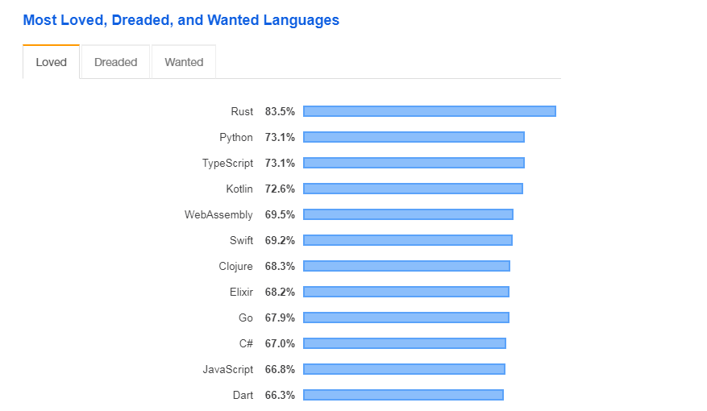
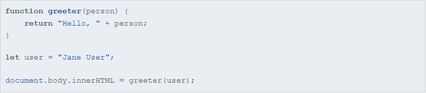
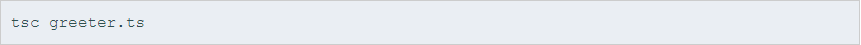

TypeScript
- Superset of JavaScript
- Compiles to EcmaScript
- No special runtime
In short: Lightweight productivity booster
Based on the Stack Overflow Developer survey in 2019, TypeScript is more "loved" as a programming language than JavaScript
What is TypeScript
- Helps in large scale JavaScript application development.
- Adds additional features like Static Type (optional), Class, Module etc (that are not present in JavaScript) to JavaScript.
- Starts with JavaScript, ends with JavaScript. TypeScipt is JavaScript. Any valid .js file can be renamed .ts and compiled with other TypeScript files.
- TypeScript purposefully borrows ideas from EcmaScript 6 (ES6 Harmony) spec – class, module.
- Open Source – The compiler is an open source project and released under the Apache 2.0 license.
- Runs on Any browser, Any host, Any OS.
How it worked
- Installing Typescript
- Text Editors Support
- Compiling to
JavaScript
Installing TypeScript
- Visual Studio 2013
- > npm i -g typescript
Building your first TypeScript file
"greeter.ts"

Compiling your code
# Initializes a watcher process that will keep main.js up to date.